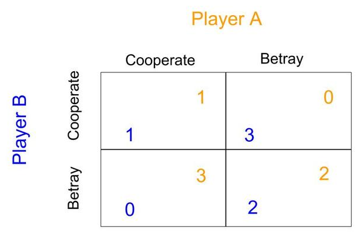
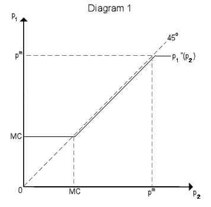
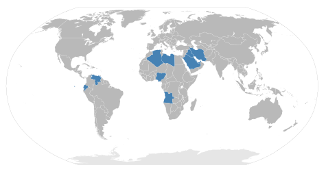

Table of Contents
13. Oligopoly
13.1. Prerequisites of Oligopoly
13.1.1. Few Sellers
13.1.2. Product Differentiation
13.1.3. Entry Barriers
13.1.4. Price Leadership
13.2. Oligopoly in Practice
13.2.1. Collusion and Competition
13.2.2. Game Theory Applications to Oligopoly
13.2.3. The Prisoner's Dilemma and Oligopoly
13.2.4. Duopoly Example
13.2.5. Cartel Example
13. Oligopoly
13.1. Prerequisites of Oligopoly
13.1.1. Few Sellers
An oligopoly - a market dominated by a few sellers - is often able to maintain market power through increasing returns to scale.
Learning Objective
Explain how increasing returns to scale will cause a higher prevalence of oligopolies
Key Points
- The existence of oligopoly requires that a few firms are able to gain significant market power, preventing other, smaller competitors from entering the market.
- Increasing returns to scale is a term that describes an industry in which the rate of increase in output is higher than the rate of increase in inputs. In other words, doubling the number of inputs will more than double the amount of output.
- Monopolies and oligopolies often form when an industry has increasing returns to scale at relatively high output levels.
Key Terms
- oligopoly
- An economic condition in which a small number of sellers exert control over the market of a commodity.
- returns to scale
- A term referring to changes in output resulting from a proportional change in all inputs (where all inputs increase by a constant factor).
Oligopoly Structure
In an oligopoly market structure, a few large firms dominate the market, and each firm recognizes that every time it takes an action it will provoke a response among the other firms. These actions, in turn, will affect the original firm. Each firm, therefore, recognizes that it is interdependent with the other firms in the industry. This interdependence is unique to the oligopoly market structure; in perfect and monopolistic competition, we assume that each firm is small enough that the rest of the market will ignore its actions.
Increasing Returns to Scale
The existence of oligopoly requires that a few firms are able to gain significant market power, preventing other, smaller competitors from entering the market. One source of this power is increasing returns to scale. Increasing returns to scale is a term that describes an industry in which the rate of increase in output is higher than the rate of increase in inputs. In other words, doubling the number of inputs will more than double the amount of output. Increasing returns to scale implies that larger firms will face lower average costs than smaller firms because they are able to take advantage of added efficiency at higher levels of production.
Types of Returns to Scale
Most industries exhibit different types of returns to scale in different ranges of output. Typically in competitive markets, there could be increasing returns at relatively low output levels, decreasing returns at relatively high output levels, and constant returns at one output level between those ranges. Monopolies and oligopolies, however, often form when an industry has increasing returns to scale at relatively high output levels. When a few large firms already exist in this type of market, any new competitor will be smaller and therefore have higher average costs of production. This will make it difficult to compete with the already-established firms. Therefore, the oligopoly firms have a built-in defense against new competition.
Take the example of the cell phone industry in the United States. As of the fourth quarter of 2008, Verizon, AT&T, Sprint, and T-Mobile together controlled 89% of the U.S. cell phone market. The cell phone industry has increasing returns to scale: the cost of providing cellular access to 100,000 people is more than half the cost of providing cellular access to 200,000 people. Any new entrant into the cell phone market will either need to pay one of the larger companies for access to its already-existing network, or try to build a network from scratch. Both options result in higher costs, higher prices, and difficulty in competing with the major networks .
Cell phone companies have increasing returns to scale, which leads to a market dominated by only a few firms.
13.1.2. Product Differentiation
Oligopolies can form when product differentiation causes decreased competition within an industry.
Learning Objective
Explain the relationship between product differentiation and the existence of an oligopoly
Key Points
- Product differentiation is the process of distinguishing a product or service from others, to make it more attractive to a particular target market.
- The objective of differentiation is to develop a position that potential customers see as unique. This primarily affects performance through reducing competition.
- Many oligopolies make differentiated products: cigarettes, automobiles, computers, ready-to-eat breakfast cereal, and soft drinks.
- Although product differentiation is not required for an oligopoly to form, if a firm can successfully differentiate its products it will gain market power and resist competition more easily.
Key Term
- product differentiation
- Perceived differences between the product of one firm and that of its rivals so that some customers value it more.
Product differentiation (or simply differentiation) is the process of distinguishing a product or service from others, to make it more attractive to a particular target market. This involves differentiating it from competitors' products as well as a firm's own products. In economics, successful product differentiation is inconsistent with the conditions for perfect competition, which include the requirement that the products of competing firms should be perfect substitutes.
Differentiation is due to buyers perceiving a difference; hence, causes of differentiation may be functional aspects of the product or service, how it is distributed and marketed, or who buys it. The major sources of product differentiation are as follows:
- Differences in quality which are usually accompanied by differences in price
- Differences in functional features or design
- Ignorance on the part of buyers regarding the essential characteristics and qualities of goods they are purchasing
- Sales promotion activities of sellers and, in particular, advertising
- Differences in availability (e.g. timing and location).
The objective of differentiation is to develop a position that potential customers see as unique. This primarily affects performance through reducing competition: As the product becomes more differentiated, categorization becomes more difficult and hence draws fewer comparisons with its competition. A successful product differentiation strategy will move a product from competing based primarily on price to competing on non-price factors (such as product characteristics, distribution strategy, or promotional variables).
Product Differentiation and Oligopolies
While some oligopoly industries make standardized products - tools, copper, and steep pipes, for example - others make differentiated products: cars, cigarettes, soda, and cell phone manufacturers. Product differentiation is not necessary for the existence of an oligopoly, but if a firm can successfully engage in product differentiation it can more easily gain market power and dominate at least part of the industry.
For example, the soft drink industry in the US is an oligopoly dominated by the Coca-Cola Company, the Dr. Pepper Snapple Group, and PepsiCo. These companies are able to differentiate their products (e.g. by taste), and are therefore able to gain market power .
Some companies are able to use marketing to achieve product differentiation, encouraging the formation of oligopolies.
13.1.3. Entry Barriers
One important source of oligopoly power are barriers to entry: obstacles that make it difficult to enter a given market.
Learning Objective
Explain the necessity of entry barriers for the existence of an oligopoly
Key Points
- Because barriers to entry protect incumbent firms and restrict competition in a market, they can contribute to distortionary prices.
- The most important barriers are economies of scale, patents, access to expensive and complex technology, and strategic actions by incumbent firms designed to discourage or destroy new entrants.
- In industrialized economies, barriers to entry have resulted in oligopolies forming in many sectors, with unprecedented levels of competition fueled by increasing globalization.
Key Terms
- incumbent
- A firm that is an established player in the market.
- research and development
- The process of discovering and creating new knowledge about scientific and technological topics in order to develop new products
- patent
- A declaration issued by a government agency declaring someone the inventor of a new invention and having the privilege of stopping others from making, using, or selling the claimed invention.
One important source of oligopoly power is barriers to entry. Barriers to entry are obstacles that make it difficult to enter a given market. The term can refer to hindrances a firm faces in trying to enter a market or industry—such as government regulation and patents, or a large, established firm taking advantage of economies of scale—or those an individual faces in trying to gain entrance to a profession—such as education or licensing requirements. Because barriers to entry protect incumbent firms and restrict competition in a market, they can contribute to distortionary prices.
The most important barriers are economies of scale, patents, access to expensive and complex technology, and strategic actions by incumbent firms designed to discourage or destroy new entrants. For example, microprocessing companies face high research and development costs before possibly making a profit. This means that new firms cannot enter the market whenever existing firms are making a positive economic profit, as is the case in perfect competition. Pharmaceutical manufacturers are one type of company that generally rely on patents, which makes competition irrelevant for a period of time after development: competitors can't legally begin manufacturing the product until the patent expires.
Additional sources of barriers to entry often result from government regulation favoring existing firms. For example, requirements for licenses and permits may raise the investment needed to enter a market, creating an effective barrier to entry.
In industrialized economies, barriers to entry have resulted in oligopolies forming in many sectors, with unprecedented levels of competition fueled by increasing globalization. For example, there are now only a small number of manufacturers of civil passenger aircraft. Oligopolies have also formed in heavily-regulated markets such as wireless communications: in some areas only two or three providers are licensed to operate .
Manufacturing commercial airplanes takes a very large initial investment in technology, equipment, and licensing. Consequently, the industry is dominated by two firms.
13.1.4. Price Leadership
Price leadership is a form of tacit collusion that oligopolies may use to achieve a monopoly-like market outcome.
Learning Objective
Define price leadership within the context of an oligopoly
Key Points
- Oligopolies are defined by one firm's interdependence on other firms within the industry. When one firm changes its price or level of output, other firms are directly affected.
- When firms collude, they use restrictive trade practices to voluntarily lower output and raise prices in much the same way as a monopoly, splitting the higher profits that result.
- An alternative to overt collusion is tacit collusion, an unwritten, unspoken understanding through which firms agree to limit their competition.
- One strategy is to follow the price leadership of a particular firm, raising or lowering prices when the leader makes such a change. The price leader may be the largest firm in the industry, or it may be a firm that has been particularly good at assessing changes in demand or cost.
Key Terms
- Price leadership
- The action taken by a leader in an oligopolistic industry to determine prices for the entire industry.
- collude
- To act in concert with; to conspire.
- Cartel
- A group of businesses or nations that collude explicitly to limit competition within an industry or market.
Oligopoly
Oligopolies are defined by one firm's interdependence on other firms within the industry. When one firm changes its price or level of output, other firms are directly affected. Unlike perfect competition and monopoly, uncertainty about how rival firms interact makes the specification of a single model of oligopoly impossible. Economists often simplify firm behavior into two strategies: firm can compete, in which case the market outcome will resemble that in perfect competition; or they can collude, in which case the market outcome will more closely resemble monopoly. When firms collude, they use restrictive trade practices to voluntarily lower output and raise prices in much the same way as a monopoly, splitting the higher profits that result.
Price Leadership
Firms can collude explicitly, as in the case of cartels, but this type of behavior is illegal in many parts of the world. An alternative to overt collusion is tacit collusion, in which firms have an unspoken understanding that limits their competition. One way in which firms achieve this is price leadership, in which one firm serves as an industry leader and sets prices, while other firms raise and lower their prices to match. For example, the steel, cars, and breakfast cereals industries have all been accused of engaging in tacit collusion..
Tacit collusion can be difficult to identify. The fact that a price change by one firm is follwed by similar price changes among other firms doesn't necessarily mean that tacit collusion exists. After all, in a perfectly competitive industry, economists expect prices to move together because all firms face similar changes in demand and the cost of inputs.
For example, imagine that a town has three gas stations. Without any way to communicate, all three will lower their prices in an attempt to capture the entire market, stopping only when marginal cost equals marginal revenue. If the firms could cooperate, however, they would be better off if all set the price of gas at \$0.20 above marginal cost. Each would have slightly lower sales but would have much higher revenue. Although explicit communication about prices is illegal, the firms might tacitly agree that whenever one station raises its prices, the other two will follow suit. In this way, all three can receive the benefits of oligopoly . The gas station that first raises its prices, and that the other two follow, is called the price leader.
Although companies cannot legally communicate to set prices, some accuse certain industries of using price leadership to accomplish the same goal.
13.2. Oligopoly in Practice
13.2.1. Collusion and Competition
Firms in an oligopoly can increase their profits through collusion, but collusive arrangements are inherently unstable.
Learning Objective
Assess the considerations involved in the oligopolist's decision about whether to compete or cooperate
Key Points
- Firms in an oligopoly may collude to set a price or output level for a market in order to maximize industry profits. At an extreme, the colluding firms can act as a monopoly.
- Oligopolists pursuing their individual self-interest would produce a greater quantity than a monopolist, and charge a lower price.
- Collusive arrangements are generally illegal. Moreover, it is difficult for firms to coordinate actions, and there is a threat that firms may defect and undermine the others in the arrangement.
- Price leadership, which occurs when a dominant competitor sets the industry price and others follow suit, is an informal type of collusion which is generally legal.
Key Terms
- Price leadership
- Occurs when one company, usually the dominant competitor among several, leads the way in determining prices, the others soon following.
- collusion
- A secret agreement for an illegal purpose; conspiracy.
- price fixing
- An agreement between sellers to sell a product only at a fixed price, or maintain the market conditions such that the price is maintained at a given level by controlling supply.
Oligopoly is a market structure in which there are a few firms producing a product. When there are few firms in the market, they may collude to set a price or output level for the market in order to maximize industry profits . As a result, price will be higher than the market-clearing price, and output is likely to be lower. At the extreme, the colluding firms may act as a monopoly, reducing their individual output so that their collective output would equal that of a monopolist, allowing them to earn higher profits.

The oil-producing countries of OPEC have at times cooperated to raise world oil prices in order to secure a steady income for themselves.
If oligopolists individually pursued their own self-interest, then they would produce a total quantity greater than the monopoly quantity, and charge a lower price than the monopoly price, thus earning a smaller profit. The promise of bigger profits gives oligopolists an incentive to cooperate. However, collusive oligopoly is inherently unstable, because the most efficient firms will be tempted to break ranks by cutting prices in order to increase market share.
Several factors deter collusion. First, price-fixing is illegal in the United States, and antitrust laws exist to prevent collusion between firms. Second, coordination among firms is difficult, and becomes more so the greater the number of firms involved. Third, there is a threat of defection. A firm may agree to collude and then break the agreement, undercutting the profits of the firms still holding to the agreement. Finally, a firm may be discouraged from collusion if it does not perceive itself to be able to effectively punish firms that may break the agreement.
In contrast to price-fixing, price leadership is a type of informal collusion which is generally legal. Price leadership, which is also sometimes called parallel pricing, occurs when the dominant competitor publishes its price ahead of other firms in the market, and the other firms then match the announced price. The leader will typically set the price to maximize its profits, which may not be the price that maximized other firms' profits.
13.2.2. Game Theory Applications to Oligopoly
Game theory provides a framework for understanding how firms behave in an oligopoly.
Learning Objective
Explain how game theory applies to oligopolies
Key Points
- In an oligopoly, firms are affected not only by their own production decisions, but by the production decisions of other firms in the market as well. Game theory models situations in which each actor, when deciding on a course of action, must also consider how others might respond to that action.
- The prisoner's dilemma is a type of game that illustrates why cooperation is difficult to maintain for oligopolists even when it is mutually beneficial. In this game, the dominant strategy of each actor is to defect. However, acting in self-interest leads to a sub-optimal collective outcome.
- The Nash equilibrium is an important concept in game theory. It is the set of strategies such that no player can do better by unilaterally changing his or her strategy.
- Game theory is generally not needed to understand competitive or monopolized markets.
Key Terms
- Prisoner's dilemma
- A game that shows why two individuals might not cooperate, even if it appears that it is in their best interests to do so.
- game theory
- A branch of applied mathematics that studies strategic situations in which individuals or organisations choose various actions in an attempt to maximize their returns.
- Nash equilibrium
- The set of players' strategies for which no player can benefit by changing his or her strategy, assuming that the other players keep theirs unchanged.
In an oligopoly, firms are interdependent; they are affected not only by their own decisions regarding how much to produce, but by the decisions of other firms in the market as well. Game theory offers a useful framework for thinking about how firms may act in the context of this interdependence. More specifically, game theory can be used to model situations in which each actor, when deciding on a course of action, must also consider how others might respond to that action.
For example, game theory can explain why oligopolies have trouble maintaining collusive arrangements to generate monopoly profits. While firms would be better off collectively if they cooperate, each individual firm has a strong incentive to cheat and undercut their competitors in order to increase market share. Because the incentive to defect is strong, firms may not even enter into a collusive agreement if they don't perceive there to be a way to effectively punish defectors.
The prisoner's dilemma is a specific type of game in game theory that illustrates why cooperation may be difficult to maintain for oligopolists even when it is mutually beneficial. In the game, two members of a criminal gang are arrested and imprisoned. The prisoners are separated and left to contemplate their options . If both prisoners confess, each will serve a two-year prison term. If one confesses, but the other denies the crime, the one that confessed will walk free, while the one that denied the crime would get a three-year sentence. If both deny the crime, they will both serve only a one year sentence. Betraying the partner by confessing is the dominant strategy; it is the better strategy for each player regardless of how the other plays. This is known as a Nash equilibrium. The result of the game is that both prisoners pursue individual logic and betray, when they would have collectively gotten a better outcome if they had both cooperated.
{kind=link}
In a prisoner's dilemma game, the dominant strategy for each player is to betray the other, even though cooperation would have led to a better collective outcome.
The Nash equilibrium is an important concept in game theory. It is the set of strategies such that no player can do better by unilaterally changing his or her strategy. If a player knew the strategies of the other players (and those strategies could not change), and could not benefit by changing his or her strategy, then that set of strategies represents a Nash equilibrium. If any player would benefit by changing his or her strategy, then that set of strategies is not a Nash equilibrium.
While game theory is important to understanding firm behavior in oligopolies, it is generally not needed to understand competitive or monopolized markets. In competitive markets, firms have such a small individual effect on the market, that taking other firms into account is simply not necessary. A monopolized market has only one firm, and thus strategic interactions do not occur.
13.2.3. The Prisoner's Dilemma and Oligopoly
The prisoner's dilemma shows why two individuals might not cooperate, even if it is collectively in their best interest to do so.
Learning Objective
Analyze the prisoner's dilemma using the concepts of strategic dominance, Pareto optimality, and Nash equilibria
Key Points
- In the game, two criminals are arrested and imprisoned. Each criminal must decide whether he will cooperate with or betray his partner. The criminals cannot communicate to coordinate their actions.
- Betrayal is the dominant strategy for both players in the game. Betrayal leads to best individual outcome regardless of what the other person does.
- Both players choosing betrayal is the Nash equilibrium of the game. However, this outcome is not Pareto-optimal. Both players would have clearly been better off if they had cooperated.
- Cooperation by firms in oligopolies is difficult to achieve because defection is in the best interest of each individual firm.
Key Terms
- Pareto optimal
- Describing a situation in which the profit of one party cannot be increased without reducing the profit of another.
- Nash equilibrium
- The set of players' strategies for which no player can benefit by changing his or her strategy, assuming that the other players keep theirs unchanged.
- Strategic dominance
- Occurs when one strategy is better than another strategy for one player, no matter how that player's opponents may play.
Sometimes firms fail to cooperate with each other, even when cooperation would bring about a better collective outcome. The prisoner's dilemma is a canonical example of a game analyzed in game theory that shows why two individuals might not cooperate, even if it appears that it is in their best interest to do so.
In the game, two members of a criminal gang are arrested and imprisoned. Each prisoner is in solitary confinement with no means of speaking to or exchanging messages with the other. The police offer each prisoner a bargain :
{kind=link}
Betrayal in the dominant strategy for both players, as it provides for a better individual outcome regardless of what the other player does. However, the resulting outcome is not Pareto-optimal. Both players would clearly have been better off if they had cooperated.
- If Prisoner A and Prisoner B both confess to the crime, each of them will serve two years in prison.
- If A confesses but B denies the crime, A will be set free, while B will serve three years in prison (and vice versa).
- If both A and B deny the crime, both of them will only serve one year in prison.
For both players, the choice to betray the partner by confessing has strategic dominance in this situation; it is the better strategy for each player regardless of what the other player does. This set of strategies is thus a Nash equilibrium in the game--no player would be better off by changing his or her strategy. As a result, all purely self-interested prisoners would betray each other, resulting in a two year prison sentence for both. This outcome is not Pareto optimal; it is clearly possible to improve the outcomes for both players through cooperation. If both players had denied the crime, they would each be serving only one year in prison.
Similarly to the prisoner's dilemma scenario, cooperation is difficult to maintain in an oligopoly because cooperation is not in the best interest of the individual players. However, the collective outcome would be improved if firms cooperated, and were thus able to maintain low production, high prices, and monopoly profits.
One traditional example of game theory and the prisoner's dilemma in practice involves soft drinks. Coca-Cola and Pepsi compete in an oligopoly, and thus are highly competitive against one another (as they have limited other competitive threats). Considering the similarity of their products in the soft drink industry (i.e. varying types of soda), any price deviation on part of one competitor is seen as an act of non-conformity or betrayal of an established status quo.
In such a scenario, there are a number of plausible reactions and outcomes. If Coca-Cola reduces their prices, Pepsi may follow to ensure they do not lose market share. In this situation, defection results in a lose-lose. Which is to say that, due to the initial price reduction by Coca-Cola (betrayal of status quo), both companies likely see reduced profit margins. On the other hand, Pepsi could uphold the price point despite Coca-Cola's deviation, sacrificing market share to Coca-Cola but maintaining the established price point. Prisoner dilemma scenarios are difficult strategic choices, as any deviation from established competitive practice may result in less profits and/or market share.
13.2.4. Duopoly Example
The Cournot model, in which firms compete on output, and the Bertrand model, in which firms compete on price, describe duopoly dynamics.
Learning Objective
Discuss the characteristics of a duopoly
Key Points
- The Cournot model focuses on the production output decision of a single firm. A firm determines its competitor's output level and the residual market demand. It then determines its profit-maximizing output for that residual demand as if it were the entire market, and produces accordingly.
- In the Bertrand model, firms set profit-maximizing prices in response to what they expect the competitor to charge. The model predicts that both firms will lower prices until they reach the marginal cost limit, arriving at an outcome equivalent to what prevails under perfect competition.
- The accuracy of the Cournot or Bertrand model will vary from industry to industry, depending on how easy it is to adjust output levels in the industry.
Key Terms
- Bertrand duopoly
- A model that describes interactions among firms competing on price.
- Cournot duopoly
- An economic model describing an industry in which companies compete on the amount of output they will produce, which they decide on independently of each other and at the same time.
A true duopoly is a specific type of oligopoly where only two producers exist in a market. There are two principle duopoly models: Cournot duopoly and Bertrand duopoly.
Cournot Duopoly
Cournot duopoly is an economic model that describes an industry structure in which firms compete on output levels. The model makes the following assumptions:
- There are two firms, which produce a homogeneous product;
- The number of firms is fixed;
- Firms do not cooperate (there is no collusion);
- Firms have market power, and each firm's output decision affects the good's price;
- Firms are economically rational and act strategically, seeking to maximize profit given their competitor's decisions; and
- Firms compete on quantity, and choose quantity simultaneously.
The Cournot model focuses on the production output decision of a single firm. The firm determines its rival's output level, evaluates the residual market demand, and then changes its own output level to maximize profits. It is assumed that the firm's output decision will not affect the output decision of its competitor.
For example, suppose that there are two firms in the market for toasters with a given demand function. Firm A will determine the output of Firm B, hold it constant, and then determine the remainder of the market demand for toasters. Firm A will then determine its profit-maximizing output for that residual demand as if it were the entire market, and produce accordingly. Firm B will be conducting similar calculations with respect to Firm A at the same time.
Bertrand Duopoly
The Bertrand model describes interactions among firms that compete on price. Firms set profit-maximizing prices in response to what they expect a competitor to charge. The model rests on the following assumptions:
- There are two firms producing homogeneous products;
- Firms do not cooperate;
- Firms compete by setting prices simultaneously; and
- Consumers buy everything from a firm with a lower price. If all firms charge the same price, consumers randomly select among them.
In the Bertrand model, Firm A's optimum price depends on where it believes Firm B will set its price . Pricing just below the other firm will obtain full market demand, though this choice is not optimal if the other firm is pricing below marginal cost, as this would result in negative profits. If Firm B is setting the price below marginal cost, Firm A will set the price at marginal cost. If Firm B is setting the price above marginal cost but below monopoly price, then Firm A will set the price just below that of Firm B. If Firm B sets the price above monopoly price, Firm A will set the price at monopoly level.
{kind=link}
The diagram shows the reaction function of a firm competing on price. When P2 (the price set by Firm 2) is less than marginal cost, Firm 1 prices at marginal cost (P1=MC). When Firm 2 prices above MC but below monopoly prices, Firm 1 prices just below Firm 2. When Firm 2 prices above monopoly price (PM), Firm 1 prices at monopoly level (P1=PM).
Imagine if both firms set equal prices above marginal cost. Each firm would get half the market at a higher than marginal cost price. However, by lowering prices just slightly, a firm could gain the whole market. As a result, both firms are tempted to lower prices as much as they can. However, it would be irrational to price below marginal cost, because the firm would make a loss. Therefore, both firms will lower prices until they reach the marginal cost limit. According to this model, a duopoly will result in an outcome exactly equivalent to what prevails under perfect competition. The result of the firms' strategies is a Nash equilibrium--a pair or strategies where neither firm can increase profits by unilaterally changing the price.
Colluding to charge the monopoly price and supplying one half of the market each is the best that the firms could do in this scenario. However, not colluding and charging the marginal cost, which is the non-cooperative outcome, is the only Nash equilibrium of this model.
The accuracy of the Cournot or Bertrand model will vary from industry to industry. If capacity and output can be easily changed, Bertrand is generally a better model of duopoly competition. If output and capacity are difficult to adjust, then Cournot is generally a better model.
13.2.5. Cartel Example
A cartel is a formal collusive arrangement among firms with the goal of increasing profits.
Learning Objective
Assess the role of competition and collusion in the formation of cartels
Key Points
- Cartel members cooperate to set industry price and output.
- Game theory indicates that cartels are inherently unstable. Each individual member has an incentive to cheat in order to make higher profits in the short run.
- Cheating may lead to the collapse of a cartel. With the collapse, firms would revert to competing, which would lead to decreased profits.
- OPEC, the Organization of Petroleum Exporting Countries, provides an example of a historically effective cartel.
Key Term
- Cartel
- A group of businesses or nations that collude to limit competition within an industry or market.
A cartel is an agreement among competing firms to collude in order to attain higher profits. Cartels usually occur in an oligopolistic industry, where the number of sellers is small and the products being traded are homogeneous. Cartel members may agree on such matters are price fixing, total industry output, market share, allocation of customers, allocation of territories, bid rigging, establishment of common sales agencies, and the division of profits.
Game theory suggests that cartels are inherently unstable, because the behavior of cartel members represents a prisoner's dilemma. Each member of a cartel would be able to make a higher profit, at least in the short-run, by breaking the agreement (producing a greater quantity or selling at a lower price) than it would make by abiding by it. However, if the cartel collapses because of defections, the firms would revert to competing, profits would drop, and all would be worse off.
Whether members of a cartel choose to cheat on the agreement depends on whether the short-term returns to cheating outweigh the long-term losses from the possible breakdown of the cartel. It also partly depends on how difficult it is for firms to monitor whether the agreement is being adhered to by other firms. If monitoring is difficult, a member is likely to get away with cheating for longer; members would then be more likely to cheat, and the cartel will be more unstable.
Perhaps the most globally recognizable and effective cartel is OPEC, the Organization of Petroleum Exporting Countries . In 1973 members of OPEC reduced their production of oil. Because crude oil from the Middle East was known to have few substitutes, OPEC member's profits skyrocketed. From 1973 to 1979, the price of oil increased by \$70 per barrel, an unprecedented number at the time. In the mid 1980s, however, OPEC started to weaken. Discovery of new oil fields in Alaska and Canada introduced new alternatives to Middle Eastern oil, causing OPEC's prices and profits to fall. Around the same time OPEC members also started cheating to try to increase individual profits.
{kind=link}
In the 1970s, OPEC members successfully colluded to reduce the global production of oil, leading to higher profits for member countries.